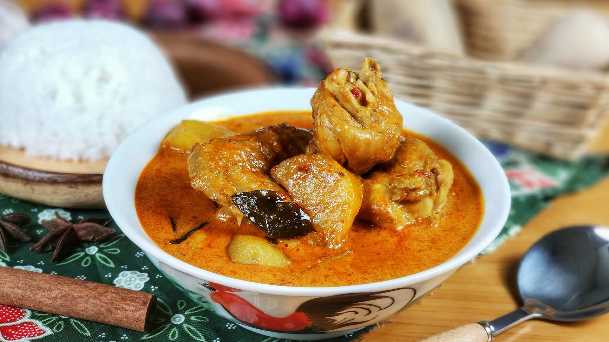

Curry Chicken
Ingredients:
- 4 chicken breasts, cut into cubes
- 2 tbsp vegetable oil
- 1 onion, finely chopped
- 3 cloves garlic, minced
- 2 tbsp curry powder
- 1 can (400ml) coconut milk
- 1 cup chicken broth
- 2 tbsp tomato paste
- Salt and pepper to taste
- Fresh cilantro for garnish
Steps:
- Heat oil in a large skillet over medium heat.
- Add onion and garlic, sauté until softened (about 5 minutes).
- Add curry powder and cook for 1 minute until fragrant.
- Add chicken cubes and cook until browned on all sides.
- Stir in coconut milk, chicken broth, and tomato paste.
- Bring to a simmer and cook for 15-20 minutes until chicken is cooked through and sauce thickens.
- Season with salt and pepper to taste.
- Serve hot, garnished with fresh cilantro, over rice or with naan bread.
Enjoy your homemade curry chicken!
Home